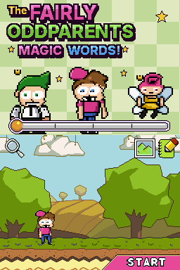
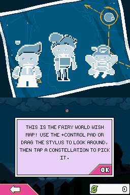
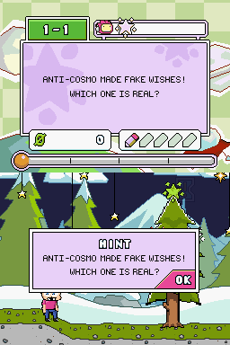
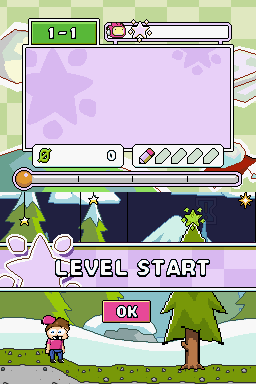

Screenshots

Title screen

Wish map

Story missions

Timmy in a level
What's inside
- Timmy TurnerA hand-drawn Timmy replaces Maxwell: pink cap, buck teeth and all.
- Cosmo & WandaWrite their names and Timmy's godparents poof in.
- 237 story missionsVicky's traps, Crocker's pop quizzes, Jorgen's boot camp, Anti-Fairies and more.
- ~85 new wordsVICKY, CROCKER, JORGEN, CRIMSON CHIN, DA RULES, MAGIC MUFFIN, WISH-O-METER...
- FOP lookNew logo, gingham title, pink buttons, lavender panels, and Wishes instead of Starites.
How to play
- Download
fop-magic-words.bps from the latest release.
- Open ROM Patcher JS in your browser (or use Floating IPS).
- Choose your own dump of Super Scribblenauts (USA) (
BH2E, CRC32 69F707EA) and the patch, then save.
- Play the patched
.nds in melonDS, DeSmuME, DraStic or on a flashcart.
The ROM is not distributed here: you need your own copy of the game.